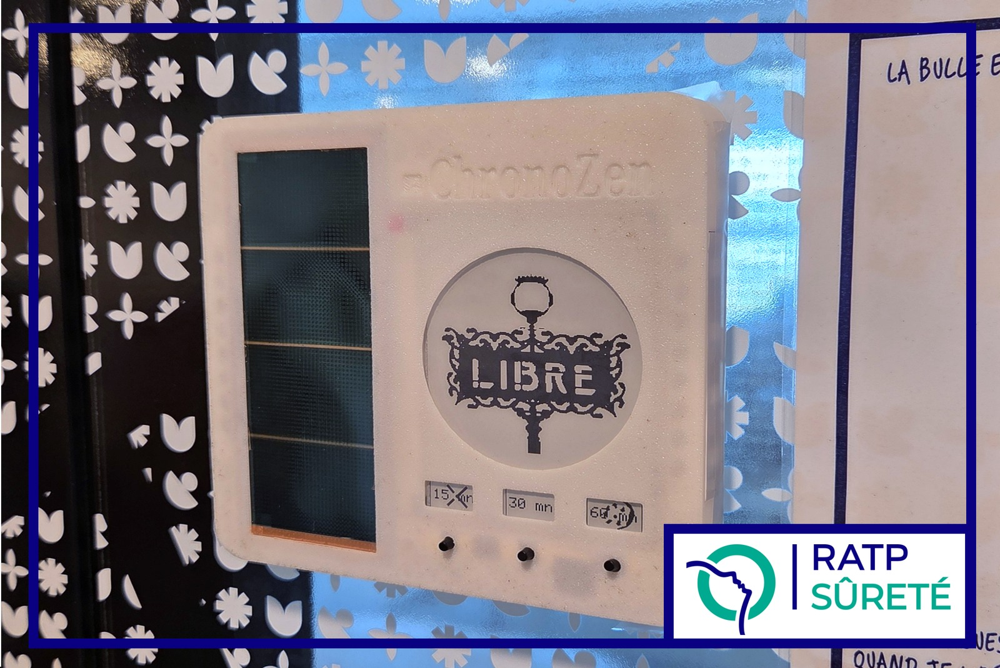
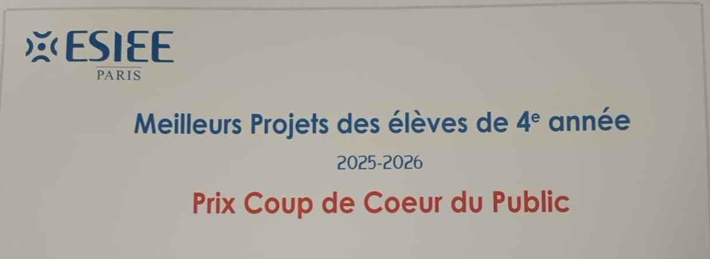

Stage · RATP
Sablier intelligent*
Un prototype à écran e-paper conçu pour fonctionner grâce à la lumière intérieure. La question centrale : quelle autonomie peut-on atteindre sans alimentation filaire, et comment préparer le dispositif à un usage réel ?
* Nom de présentation ; le nom interne du projet reste confidentiel.

Le point de départ
Un afficheur qui doit se passer d’une alimentation filaire
Le sujet de stage portait sur un dispositif à écran e-paper alimenté par une cellule photovoltaïque exploitant l’éclairage intérieur. Avant d’envisager son déploiement, il fallait vérifier que l’énergie récoltée pouvait couvrir les consommations du système, y compris lorsque la lumière est faible, et que le dispositif répondait aux usages attendus.
Le projet associait ainsi une question d’autonomie énergétique à des choix de conception embarquée et à la préparation d’une solution industrialisable.
Ma contribution
Relier le code, l’énergie disponible et les contraintes de conception
J’ai programmé le firmware et vérifié les conditions nécessaires au fonctionnement autonome. J’ai également contribué à transformer les besoins du projet en choix techniques et en spécifications discutées avec les interlocuteurs concernés.
- Gestion des états de veille, de la persistance d’état et des modes d’affichage dans le firmware.
- Établissement d’un bilan énergétique et vérification du fonctionnement sous faible éclairement.
- Comparaison de solutions d’affichage, d’alimentation et de communication, puis rédaction de spécifications.
- Échanges avec des sous-traitants en vue d’une carte électronique dédiée et avec de futurs utilisateurs.
Résultat et reconnaissance
Un projet présenté au public et récompensé
J’ai présenté le projet lors d’un pitch public. À l’issue de cette présentation, il a reçu le Prix Coup de cœur du public des Meilleurs Projets des élèves d’ESIEE Paris, le 6 mai 2026.

Livrables et informations publiables
Le prototype, le firmware, le bilan énergétique et les spécifications constituent les principaux livrables du travail. La photo du prototype et l’attestation partielle du prix sont présentées ici ; les références de composants et les documents internes restent confidentiels.
Je peux détailler en entretien les arbitrages, les essais et ma contribution au projet.
Échanger sur le projet